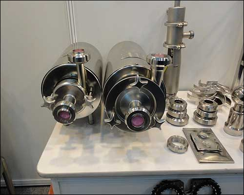
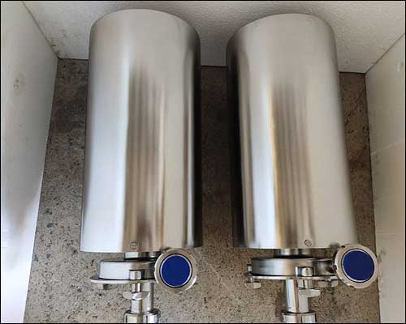

- A centrifugal pump is a mechanical device designed to move a fluid by means of the transfer of rotational energy from one or more driven rotors, called impellers.
- Fluid enters the rapidly rotating impeller along its axis and is cast out by centrifugal force along its circumference through the impeller's vane tips.

TAVRON PUMPS
- TAVRON PUMPS are made of SS 304/ SS 316 type construction.
- They are of Centrifugal type coupled to electric Motor/Monobloc version.
- Capacity of 500 LPH to 1,00,000 LPH.
- Tavron Pumps have Head up to 60 MWC.
- They have been designed to be suitable for Operation under Vacuum Condition.
- Monobloc version coupled to petrol or diesel engine are also available.
- They are provided with Open impeller design suitable to handle viscous products, pulps etc.

Salient Features
- Sanitary constructions
- Durable mechanical shaft seals.
- Easy and quick dismantling for cleaning.

Applications
Centrifugal pumps "W" series have various applications some of them are:- a) Dairy Industry: Pumping milk, Cream, Butter oil, Evaporator plants.
- b) Beverage Industry: Pumping various Juice, Sugar Syrup, Beer, Wine etc.
- c) Steel Industry: Pumping water for furnace cooling.
- d) Chemical Industry: Pumping acids, Alkalis, Cellulose solution, Starch Solution, Yeast, Dye.
- e) Pharmaceutical Industry: Pumping formulations.